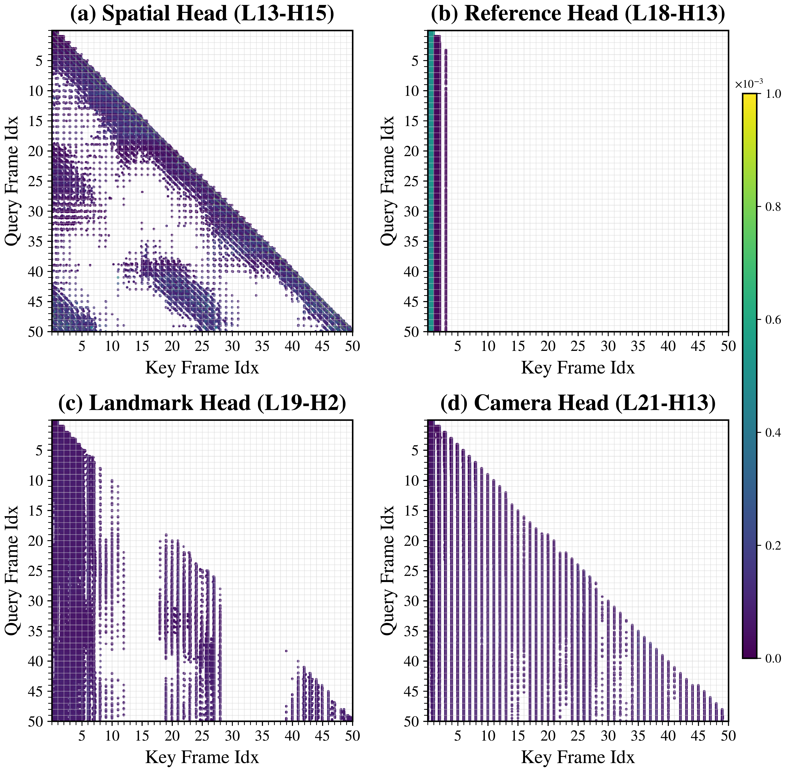
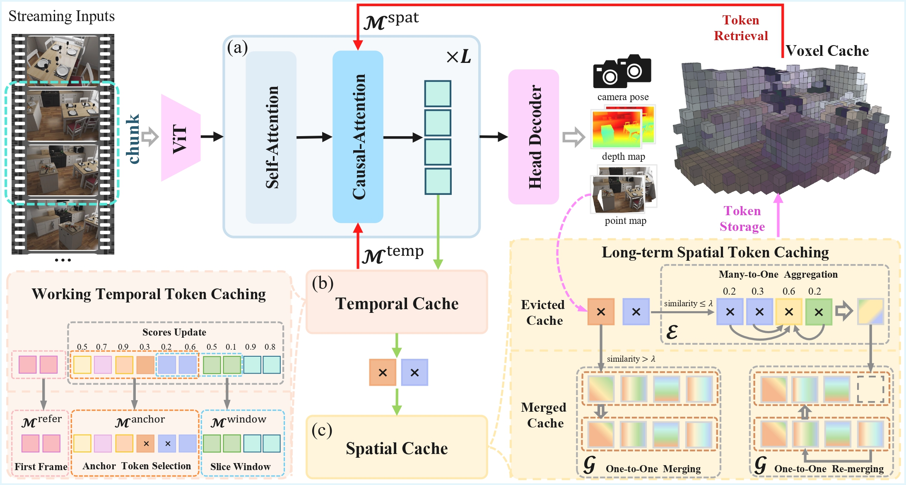
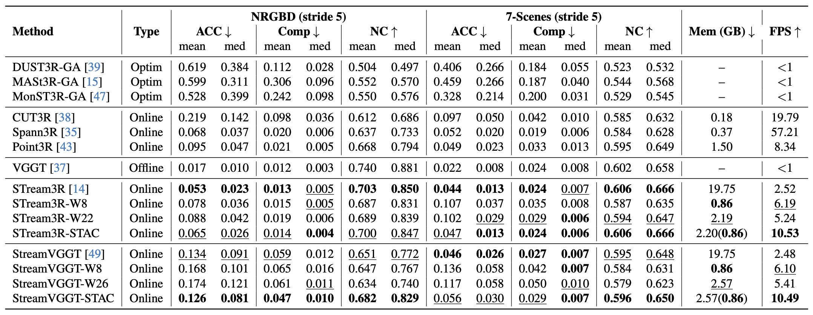
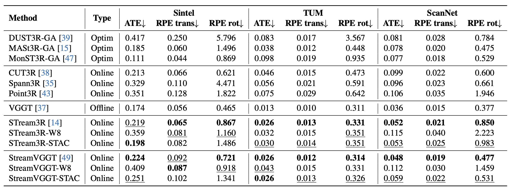
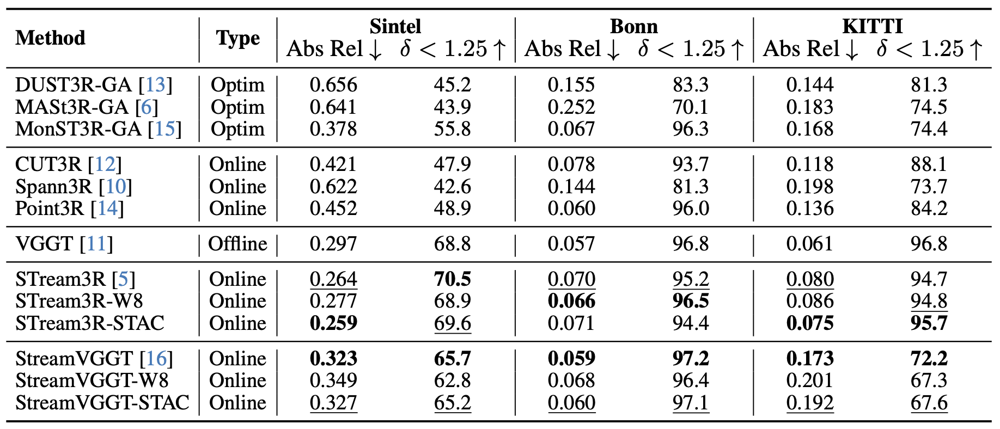
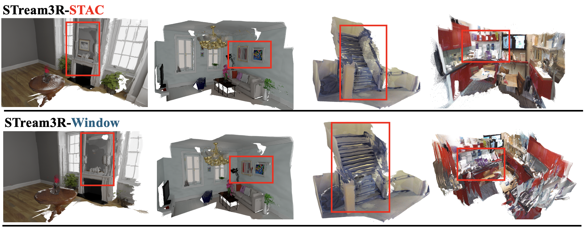

Online 3D reconstruction from streaming inputs requires both long-term temporal consistency and efficient memory usage. Although causal VGGT transformers address this challenge through a key-value (KV) cache mechanism, the cache grows linearly with the stream length, creating a major memory bottleneck. Under limited memory budgets, early cache eviction significantly degrades reconstruction quality and temporal consistency. In this work, we observe that attention in causal transformers for 3D reconstruction exhibits intrinsic spatio-temporal sparsity. Based on this insight, we propose STAC, a Spatio-Temporally Aware Cache Compression framework for streaming 3D reconstruction with large causal transformers. STAC consists of three key components: (1) a Working Temporal Token Caching mechanism that preserves long-term informative tokens using decayed cumulative attention scores; (2) a Long-term Spatial Token Caching scheme that compresses spatially redundant tokens into voxel-aligned representations for memory-efficient storage; and (3) a Chunk-based Multi-frame Optimization strategy that jointly processes consecutive frames to improve temporal coherence and GPU efficiency. Extensive experiments show that STAC achieves state-of-the-art reconstruction quality while reducing memory consumption by nearly 10× and accelerating inference by 4×, substantially improving the scalability of real-time 3D reconstruction in streaming settings.
Spatial Sparsity. As shown in (a), some heads exhibit sparsity along the spatial dimension of the KV cache: the query-key correlations are strongly related to scene geometry and image content, leading the model to focus on visually and spatially adjacent regions across frames.
Temporal Sparsity. As shown in (b)-(d), other heads exhibit sparsity along the temporal dimension: each query is strongly correlated with only a small subset of keys over time, including first-frame references, landmark frames, and camera tokens carrying long-range temporal context.

Spatio-temporal attention sparsity.
STAC reconstructs 3D scenes online with spatio-temporal token caching and chunk-based causal inference. In each chunk, the Causal-VGGT module processes ViT-tokenized frames with causal attention over the working temporal cache \(M^{\text{temp}}\) and the spatial cache \(\mathcal{M}^{\text{spat}}\) retrieved from a 3D voxel grid. Working Temporal Token Caching retains high-scoring anchor tokens together with reference and sliding-window tokens, while Long-term Spatial Token Caching aggregates evicted tokens with 3D coordinates into compact voxel-aligned representations for future retrieval.

Overview of the STAC framework.
Quantitative results for point cloud reconstruction on NRGBD and 7-Scenes. Integrating STAC into STream3R and StreamVGGT substantially improves memory and runtime efficiency while preserving reconstruction quality.

Quantitative and Performance results on NRGBD and 7-Scenes.
Camera pose estimation on Sintel, TUM Dynamics, and ScanNet. STAC achieves competitive accuracy under a substantially reduced memory budget.

Quantitative results on Sintel, TUM Dynamics, and ScanNet.
Scale-invariant depth estimation on Sintel, Bonn, and KITTI. STAC improves depth accuracy and temporal consistency under the same runtime memory budget.

Quantitative results on Sintel, Bonn, and KITTI.
Qualitative visualizations of streaming reconstruction with compressed cache.

Qualitative visualization of streaming reconstruction.
@article{wang2026stac,
title={STAC: Plug-and-Play Spatio-Temporal Aware Cache Compression for Streaming 3D Reconstruction},
author={Wang, Runze and Song, Yuxuan and Cai, Youcheng and Liu, Ligang},
journal={arXiv preprint arXiv:2603.20284},
year={2026}
}